<!DOCTYPE html>
<html lang=zh>
<head>
    <!-- so meta -->
    <meta charset="utf-8">
    <meta http-equiv="X-UA-Compatible" content="IE=edge">
    <meta name="HandheldFriendly" content="True">
    <meta name="viewport" content="width=device-width, initial-scale=1, maximum-scale=5" />
    <meta name="description" content="3.6 程序間的溝通 (Process Communication) 又稱為 inter-process communication IPC 方法有兩種：  Shared Memory Message Passing 圖：   目錄  Shared Memory Message Passing   Shared Memory 分享記憶體 Def: 指多個 process 藉由共用相同的 memor">
<meta property="og:type" content="article">
<meta property="og:title" content="Chapter3-作業系統-程序間的溝通-part1">
<meta property="og:url" content="https://pingjing0628.github.io/2021/06/20/Chapter3-%E4%BD%9C%E6%A5%AD%E7%B3%BB%E7%B5%B1-%E7%A8%8B%E5%BA%8F%E9%96%93%E7%9A%84%E6%BA%9D%E9%80%9A-part1/">
<meta property="og:site_name" content="PinJing&#39;s Blog">
<meta property="og:description" content="3.6 程序間的溝通 (Process Communication) 又稱為 inter-process communication IPC 方法有兩種：  Shared Memory Message Passing 圖：   目錄  Shared Memory Message Passing   Shared Memory 分享記憶體 Def: 指多個 process 藉由共用相同的 memor">
<meta property="og:locale" content="zh_TW">
<meta property="og:image" content="https://pingjing0628.github.io/2021/06/20/Chapter3-%E4%BD%9C%E6%A5%AD%E7%B3%BB%E7%B5%B1-%E7%A8%8B%E5%BA%8F%E9%96%93%E7%9A%84%E6%BA%9D%E9%80%9A-part1/3.6.png">
<meta property="og:image" content="https://pingjing0628.github.io/2021/06/20/Chapter3-%E4%BD%9C%E6%A5%AD%E7%B3%BB%E7%B5%B1-%E7%A8%8B%E5%BA%8F%E9%96%93%E7%9A%84%E6%BA%9D%E9%80%9A-part1/C.S.png">
<meta property="og:image" content="https://pingjing0628.github.io/2021/06/20/Chapter3-%E4%BD%9C%E6%A5%AD%E7%B3%BB%E7%B5%B1-%E7%A8%8B%E5%BA%8F%E9%96%93%E7%9A%84%E6%BA%9D%E9%80%9A-part1/algo1.png">
<meta property="og:image" content="https://pingjing0628.github.io/2021/06/20/Chapter3-%E4%BD%9C%E6%A5%AD%E7%B3%BB%E7%B5%B1-%E7%A8%8B%E5%BA%8F%E9%96%93%E7%9A%84%E6%BA%9D%E9%80%9A-part1/algo2Data.png">
<meta property="og:image" content="https://pingjing0628.github.io/2021/06/20/Chapter3-%E4%BD%9C%E6%A5%AD%E7%B3%BB%E7%B5%B1-%E7%A8%8B%E5%BA%8F%E9%96%93%E7%9A%84%E6%BA%9D%E9%80%9A-part1/algo2.png">
<meta property="og:image" content="https://pingjing0628.github.io/2021/06/20/Chapter3-%E4%BD%9C%E6%A5%AD%E7%B3%BB%E7%B5%B1-%E7%A8%8B%E5%BA%8F%E9%96%93%E7%9A%84%E6%BA%9D%E9%80%9A-part1/algo3Data.png">
<meta property="og:image" content="https://pingjing0628.github.io/2021/06/20/Chapter3-%E4%BD%9C%E6%A5%AD%E7%B3%BB%E7%B5%B1-%E7%A8%8B%E5%BA%8F%E9%96%93%E7%9A%84%E6%BA%9D%E9%80%9A-part1/algo3.png">
<meta property="og:image" content="https://pingjing0628.github.io/2021/06/20/Chapter3-%E4%BD%9C%E6%A5%AD%E7%B3%BB%E7%B5%B1-%E7%A8%8B%E5%BA%8F%E9%96%93%E7%9A%84%E6%BA%9D%E9%80%9A-part1/%E5%A4%9Aprocess.png">
<meta property="og:image" content="https://pingjing0628.github.io/2021/06/20/Chapter3-%E4%BD%9C%E6%A5%AD%E7%B3%BB%E7%B5%B1-%E7%A8%8B%E5%BA%8F%E9%96%93%E7%9A%84%E6%BA%9D%E9%80%9A-part1/semaphore.png">
<meta property="og:image" content="https://pingjing0628.github.io/2021/06/20/Chapter3-%E4%BD%9C%E6%A5%AD%E7%B3%BB%E7%B5%B1-%E7%A8%8B%E5%BA%8F%E9%96%93%E7%9A%84%E6%BA%9D%E9%80%9A-part1/way1.png">
<meta property="og:image" content="https://pingjing0628.github.io/2021/06/20/Chapter3-%E4%BD%9C%E6%A5%AD%E7%B3%BB%E7%B5%B1-%E7%A8%8B%E5%BA%8F%E9%96%93%E7%9A%84%E6%BA%9D%E9%80%9A-part1/way2.png">
<meta property="og:image" content="https://pingjing0628.github.io/2021/06/20/Chapter3-%E4%BD%9C%E6%A5%AD%E7%B3%BB%E7%B5%B1-%E7%A8%8B%E5%BA%8F%E9%96%93%E7%9A%84%E6%BA%9D%E9%80%9A-part1/think.png">
<meta property="article:published_time" content="2021-06-20T03:41:20.000Z">
<meta property="article:modified_time" content="2021-06-22T12:34:09.006Z">
<meta property="article:author" content="PinJing Wang">
<meta property="article:tag" content="O.S">
<meta property="article:tag" content="Shared Memory">
<meta property="article:tag" content="Critical Section">
<meta property="article:tag" content="Semaphore">
<meta property="article:tag" content="Counting Semaphore">
<meta name="twitter:card" content="summary">
<meta name="twitter:image" content="https://pingjing0628.github.io/2021/06/20/Chapter3-%E4%BD%9C%E6%A5%AD%E7%B3%BB%E7%B5%B1-%E7%A8%8B%E5%BA%8F%E9%96%93%E7%9A%84%E6%BA%9D%E9%80%9A-part1/3.6.png">
    
    
      
        
          <link rel="shortcut icon" href="/images/favicon.ico">
        
      
      
        
          <link rel="icon" type="image/png" href="/images/favicon-192x192.png" sizes="192x192">
        
      
      
        
          <link rel="apple-touch-icon" sizes="180x180" href="/images/apple-touch-icon.png">
        
      
    
    <!-- title -->
    <title>Chapter3-作業系統-程序間的溝通-part1</title>
    <!-- styles -->
    
<link rel="stylesheet" href="/css/style.css">

    <!-- persian styles -->
    
    <!-- rss -->
    
    
	<!-- mathjax -->
	
		<script type="text/x-mathjax-config">
		  MathJax.Hub.Config({
			tex2jax: {
			  skipTags: ['script', 'noscript', 'style', 'textarea', 'pre'],
			  inlineMath: [['$','$']]
			}
		  });
		</script>
		<script src='https://cdnjs.cloudflare.com/ajax/libs/mathjax/2.7.5/latest.js?config=TeX-MML-AM_CHTML' async></script>
	
<meta name="generator" content="Hexo 4.2.1"><link rel="alternate" href="/atom.xml" title="PinJing's Blog" type="application/atom+xml">
</head>

<body class="max-width mx-auto px3 ltr">
    
      <div id="header-post">
  <a id="menu-icon" href="#" aria-label="Menu"><i class="fas fa-bars fa-lg"></i></a>
  <a id="menu-icon-tablet" href="#" aria-label="Menu"><i class="fas fa-bars fa-lg"></i></a>
  <a id="top-icon-tablet" href="#" "Top" onclick="$('html, body').animate({ scrollTop: 0 }, 'fast');" style="display:none;"><i class="fas fa-chevron-up fa-lg"></i></a>
  <span id="menu">
    <span id="nav">
      <ul>
         
          <li><a href="/">Home</a></li>
         
          <li><a href="/about/">About</a></li>
         
          <li><a href="/archives/">Articles</a></li>
         
          <li><a href="/categories">Categories</a></li>
         
          <li><a href="/tags">Tags</a></li>
         
          <li><a href="/search/">Search</a></li>
        
      </ul>
    </span>
    <br/>
    <span id="actions">
      <ul>
        
        <li><a class="icon" aria-label="Previous post " href="/2021/06/20/Chapter3-%E4%BD%9C%E6%A5%AD%E7%B3%BB%E7%B5%B1-%E7%A8%8B%E5%BA%8F%E9%96%93%E7%9A%84%E6%BA%9D%E9%80%9A-part2/"><i class="fas fa-chevron-left" aria-hidden="true" onmouseover="$('#i-prev').toggle();" onmouseout="$('#i-prev').toggle();"></i></a></li>
        
        
        <li><a class="icon" aria-label="Next post " href="/2021/06/19/Chapter3-%E4%BD%9C%E6%A5%AD%E7%B3%BB%E7%B5%B1-%E6%AD%BB%E7%B5%90deadlock-part2/"><i class="fas fa-chevron-right" aria-hidden="true" onmouseover="$('#i-next').toggle();" onmouseout="$('#i-next').toggle();"></i></a></li>
        
        <li><a class="icon" aria-label="Back to top " href="#" onclick="$('html, body').animate({ scrollTop: 0 }, 'fast');"><i class="fas fa-chevron-up" aria-hidden="true" onmouseover="$('#i-top').toggle();" onmouseout="$('#i-top').toggle();"></i></a></li>
        <li><a class="icon" aria-label="Share post " href="#"><i class="fas fa-share-alt" aria-hidden="true" onmouseover="$('#i-share').toggle();" onmouseout="$('#i-share').toggle();" onclick="$('#share').toggle();return false;"></i></a></li>
      </ul>
      <span id="i-prev" class="info" style="display:none;">Previous post</span>
      <span id="i-next" class="info" style="display:none;">Next post</span>
      <span id="i-top" class="info" style="display:none;">Back to top</span>
      <span id="i-share" class="info" style="display:none;">Share post</span>
    </span>
    <br/>
    <div id="share" style="display: none">
      <ul>
  <li><a class="icon" href="http://www.facebook.com/sharer.php?u=https://pingjing0628.github.io/2021/06/20/Chapter3-%E4%BD%9C%E6%A5%AD%E7%B3%BB%E7%B5%B1-%E7%A8%8B%E5%BA%8F%E9%96%93%E7%9A%84%E6%BA%9D%E9%80%9A-part1/" target="_blank" rel="noopener"><i class="fab fa-facebook " aria-hidden="true"></i></a></li>
  <li><a class="icon" href="https://twitter.com/share?url=https://pingjing0628.github.io/2021/06/20/Chapter3-%E4%BD%9C%E6%A5%AD%E7%B3%BB%E7%B5%B1-%E7%A8%8B%E5%BA%8F%E9%96%93%E7%9A%84%E6%BA%9D%E9%80%9A-part1/&text=Chapter3-作業系統-程序間的溝通-part1" target="_blank" rel="noopener"><i class="fab fa-twitter " aria-hidden="true"></i></a></li>
  <li><a class="icon" href="http://www.linkedin.com/shareArticle?url=https://pingjing0628.github.io/2021/06/20/Chapter3-%E4%BD%9C%E6%A5%AD%E7%B3%BB%E7%B5%B1-%E7%A8%8B%E5%BA%8F%E9%96%93%E7%9A%84%E6%BA%9D%E9%80%9A-part1/&title=Chapter3-作業系統-程序間的溝通-part1" target="_blank" rel="noopener"><i class="fab fa-linkedin " aria-hidden="true"></i></a></li>
  <li><a class="icon" href="https://pinterest.com/pin/create/bookmarklet/?url=https://pingjing0628.github.io/2021/06/20/Chapter3-%E4%BD%9C%E6%A5%AD%E7%B3%BB%E7%B5%B1-%E7%A8%8B%E5%BA%8F%E9%96%93%E7%9A%84%E6%BA%9D%E9%80%9A-part1/&is_video=false&description=Chapter3-作業系統-程序間的溝通-part1" target="_blank" rel="noopener"><i class="fab fa-pinterest " aria-hidden="true"></i></a></li>
  <li><a class="icon" href="mailto:?subject=Chapter3-作業系統-程序間的溝通-part1&body=Check out this article: https://pingjing0628.github.io/2021/06/20/Chapter3-%E4%BD%9C%E6%A5%AD%E7%B3%BB%E7%B5%B1-%E7%A8%8B%E5%BA%8F%E9%96%93%E7%9A%84%E6%BA%9D%E9%80%9A-part1/"><i class="fas fa-envelope " aria-hidden="true"></i></a></li>
  <li><a class="icon" href="https://getpocket.com/save?url=https://pingjing0628.github.io/2021/06/20/Chapter3-%E4%BD%9C%E6%A5%AD%E7%B3%BB%E7%B5%B1-%E7%A8%8B%E5%BA%8F%E9%96%93%E7%9A%84%E6%BA%9D%E9%80%9A-part1/&title=Chapter3-作業系統-程序間的溝通-part1" target="_blank" rel="noopener"><i class="fab fa-get-pocket " aria-hidden="true"></i></a></li>
  <li><a class="icon" href="http://reddit.com/submit?url=https://pingjing0628.github.io/2021/06/20/Chapter3-%E4%BD%9C%E6%A5%AD%E7%B3%BB%E7%B5%B1-%E7%A8%8B%E5%BA%8F%E9%96%93%E7%9A%84%E6%BA%9D%E9%80%9A-part1/&title=Chapter3-作業系統-程序間的溝通-part1" target="_blank" rel="noopener"><i class="fab fa-reddit " aria-hidden="true"></i></a></li>
  <li><a class="icon" href="http://www.stumbleupon.com/submit?url=https://pingjing0628.github.io/2021/06/20/Chapter3-%E4%BD%9C%E6%A5%AD%E7%B3%BB%E7%B5%B1-%E7%A8%8B%E5%BA%8F%E9%96%93%E7%9A%84%E6%BA%9D%E9%80%9A-part1/&title=Chapter3-作業系統-程序間的溝通-part1" target="_blank" rel="noopener"><i class="fab fa-stumbleupon " aria-hidden="true"></i></a></li>
  <li><a class="icon" href="http://digg.com/submit?url=https://pingjing0628.github.io/2021/06/20/Chapter3-%E4%BD%9C%E6%A5%AD%E7%B3%BB%E7%B5%B1-%E7%A8%8B%E5%BA%8F%E9%96%93%E7%9A%84%E6%BA%9D%E9%80%9A-part1/&title=Chapter3-作業系統-程序間的溝通-part1" target="_blank" rel="noopener"><i class="fab fa-digg " aria-hidden="true"></i></a></li>
  <li><a class="icon" href="http://www.tumblr.com/share/link?url=https://pingjing0628.github.io/2021/06/20/Chapter3-%E4%BD%9C%E6%A5%AD%E7%B3%BB%E7%B5%B1-%E7%A8%8B%E5%BA%8F%E9%96%93%E7%9A%84%E6%BA%9D%E9%80%9A-part1/&name=Chapter3-作業系統-程序間的溝通-part1&description=" target="_blank" rel="noopener"><i class="fab fa-tumblr " aria-hidden="true"></i></a></li>
  <li><a class="icon" href="https://news.ycombinator.com/submitlink?u=https://pingjing0628.github.io/2021/06/20/Chapter3-%E4%BD%9C%E6%A5%AD%E7%B3%BB%E7%B5%B1-%E7%A8%8B%E5%BA%8F%E9%96%93%E7%9A%84%E6%BA%9D%E9%80%9A-part1/&t=Chapter3-作業系統-程序間的溝通-part1" target="_blank" rel="noopener"><i class="fab fa-hacker-news " aria-hidden="true"></i></a></li>
</ul>

    </div>
    <div id="toc">
      <ol class="toc"><li class="toc-item toc-level-1"><a class="toc-link" href="#"><span class="toc-number">1.</span> <span class="toc-text">3.6 程序間的溝通 (Process Communication)</span></a><ol class="toc-child"><li class="toc-item toc-level-2"><a class="toc-link" href="#"><span class="toc-number">1.1.</span> <span class="toc-text">目錄</span></a></li><li class="toc-item toc-level-2"><a class="toc-link" href="#"><span class="toc-number">1.2.</span> <span class="toc-text">Shared Memory 分享記憶體</span></a><ol class="toc-child"><li class="toc-item toc-level-3"><a class="toc-link" href="#"><span class="toc-number">1.2.1.</span> <span class="toc-text">Critical Section Design</span></a></li><li class="toc-item toc-level-3"><a class="toc-link" href="#"><span class="toc-number">1.2.2.</span> <span class="toc-text">C.S. Design 目錄</span></a></li><li class="toc-item toc-level-3"><a class="toc-link" href="#"><span class="toc-number">1.2.3.</span> <span class="toc-text">2 個 process 的 C.S. Design</span></a><ol class="toc-child"><li class="toc-item toc-level-4"><a class="toc-link" href="#"><span class="toc-number">1.2.3.1.</span> <span class="toc-text">algorithm1:</span></a></li><li class="toc-item toc-level-4"><a class="toc-link" href="#"><span class="toc-number">1.2.3.2.</span> <span class="toc-text">algorithm2:</span></a></li><li class="toc-item toc-level-4"><a class="toc-link" href="#"><span class="toc-number">1.2.3.3.</span> <span class="toc-text">algorithm3:</span></a></li></ol></li><li class="toc-item toc-level-3"><a class="toc-link" href="#"><span class="toc-number">1.2.4.</span> <span class="toc-text">多 process 的 C.S. Design &#x3D;&gt; Bakery&#39;s algorithm</span></a></li><li class="toc-item toc-level-3"><a class="toc-link" href="#"><span class="toc-number">1.2.5.</span> <span class="toc-text">Semaphore (號誌) (可有互斥的效果)</span></a></li><li class="toc-item toc-level-3"><a class="toc-link" href="#"><span class="toc-number">1.2.6.</span> <span class="toc-text">Counting Semaphore (計數號誌)</span></a><ol class="toc-child"><li class="toc-item toc-level-4"><a class="toc-link" href="#"><span class="toc-number">1.2.6.1.</span> <span class="toc-text">&lt;法一&gt;：用 Block, wakeup 及 Queue 製作</span></a></li><li class="toc-item toc-level-4"><a class="toc-link" href="#"><span class="toc-number">1.2.6.2.</span> <span class="toc-text">&lt;法二&gt;：用 Binary Semaphore 製作出 counting semaphore</span></a></li><li class="toc-item toc-level-4"><a class="toc-link" href="#"><span class="toc-number">1.2.6.3.</span> <span class="toc-text">Compare</span></a></li></ol></li><li class="toc-item toc-level-3"><a class="toc-link" href="#"><span class="toc-number">1.2.7.</span> <span class="toc-text">思考</span></a></li></ol></li></ol></li></ol>
    </div>
  </span>
</div>

    
    <div class="content index py4">
        
        <article class="post" itemscope itemtype="http://schema.org/BlogPosting">
  <header>
    
    <h1 class="posttitle" itemprop="name headline">
        Chapter3-作業系統-程序間的溝通-part1
    </h1>


    <div class="meta">
      <span class="author" itemprop="author" itemscope itemtype="http://schema.org/Person">
        <span itemprop="name">PinJing Wang</span>
      </span>
      
    <div class="postdate">
      
        <time datetime="2021-06-20T03:41:20.000Z" itemprop="datePublished">2021-06-20</time>
        
      
    </div>


      
    <div class="article-category">
        <i class="fas fa-archive"></i>
        <a class="category-link" href="/categories/%E8%A8%88%E7%AE%97%E6%A9%9F%E6%A6%82%E8%AB%96/">計算機概論</a>
    </div>


      
    <div class="article-tag">
        <i class="fas fa-tag"></i>
        <a class="tag-link" href="/tags/Counting-Semaphore/" rel="tag">Counting Semaphore</a>, <a class="tag-link" href="/tags/Critical-Section/" rel="tag">Critical Section</a>, <a class="tag-link" href="/tags/O-S/" rel="tag">O.S</a>, <a class="tag-link" href="/tags/Semaphore/" rel="tag">Semaphore</a>, <a class="tag-link" href="/tags/Shared-Memory/" rel="tag">Shared Memory</a>
    </div>


    </div>
  </header>
  

  <div class="content" itemprop="articleBody">
    <h1>3.6 程序間的溝通 (Process Communication)</h1>
<p>又稱為 <strong>inter-process communication</strong> IPC<br>
方法有兩種：</p>
<ol>
<li>Shared Memory</li>
<li>Message Passing<br>
圖：
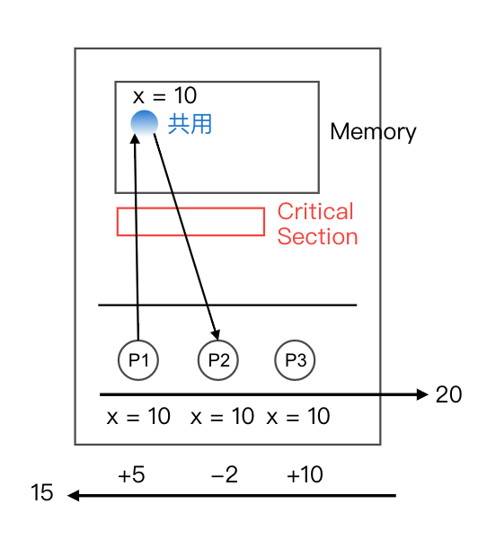</li>
</ol>
<h2>目錄</h2>
<ul>
<li><strong>Shared Memory</strong></li>
<li>Message Passing</li>
</ul>
<hr>
<h2>Shared Memory 分享記憶體</h2>
<p>Def: 指多個 process 藉由共用相同的 memory space 達到行程間溝通之效 (Multiprocessor)<br>
問題：<strong>Race Condition 競爭情況</strong><br>
Def: 相同的運作. 因執行順序不同, 造成處理的結果不同謂之<br>
解決：<strong>Critical Section 臨界區間</strong><br>
Def: 為一程式片段, 用來提供多 process 共用一 memory space 時的存取控管機制 =&gt; <strong>避免 race conditional</strong></p>
<h3>Critical Section Design</h3>
<p>格式：<br>
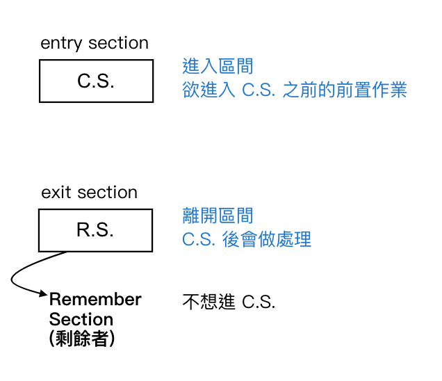<br>
良好的 C.S Design 需滿足：</p>
<ol>
<li>Mutual exclusion (互斥)：指同一時間只允許一個 process 進入 C.S.</li>
<li>Progress (可進行性)：不想進 C.S. 的 process, 不能影響其他欲進入 C.S. 之 process
<ul>
<li>若有多個 process 欲進入 C.S., 則挑選的時間是有限的 =&gt; <strong>避免 deadlock</strong></li>
</ul>
</li>
<li>Bounded waiting (有限性等待)：指 n 個 process 存在於進入 C.S., 最多只需 wait n-1 次 =&gt; <strong>公平, No starvation</strong></li>
</ol>
<h3>C.S. Design 目錄</h3>
<ul>
<li>algo
<ul>
<li>2 process =&gt; 3 algos (<strong>turn, flag</strong>)</li>
<li>2 process =&gt; 1 algos (<strong>turn + flag</strong>)</li>
</ul>
</li>
<li>Semaphore
<ul>
<li>Binary</li>
<li>Counting</li>
</ul>
</li>
</ul>
<hr>
<h3>2 個 process 的 C.S. Design</h3>
<h4>algorithm1:</h4>
<ul>
<li>資料結構 (宣告變數)：<br>
<code>var turn: integer (0~1);</code></li>
<li>Pi 之程式片段：<br>
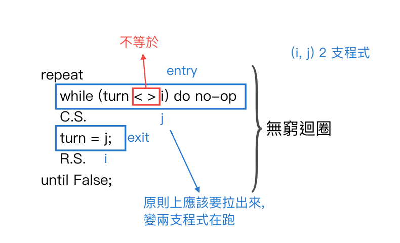</li>
<li>分析：
<ol>
<li>滿足 mutual exclusion (互斥)<br>
說明：<br>
當 Pi, Pj 皆欲進入 C.S., 又 turn 不會同時為 i, j (因為 i 不等於 j), 故只能一個 process 進入 C.S.</li>
<li>不滿足 progress (可進行性)<br>
說明：<br>
當 Pj 於 R.S. 中 (因為 j 就是不想上廁所), 但 <code>turn = j</code>, 此時若 Pi 想進入 C.S., 將被卡在 while loop 中無法進入 (因為違反 progress)</li>
</ol>
</li>
</ul>
<h4>algorithm2:</h4>
<ul>
<li>
<p>資料結構：<br>
<code>var flag [0...1] of Boolean;</code><br>
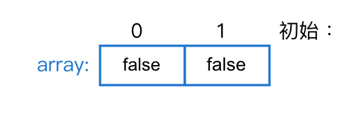</p>
</li>
<li>
<p>Pi 之程式片段：<br>
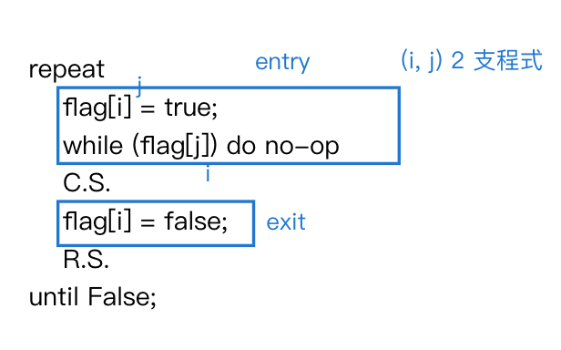</p>
</li>
<li>
<p>分析：</p>
<ol>
<li>滿足 mutual exclusion (互斥)<br>
說明：<br>
若欲使 Pi, Pj 同時進入 C.S., 則 <code>flag[i] = flag[j] = false</code>, 又當欲進入 C.S. 一開始 flag, 會改為 true, 故上述情況不可能存在</li>
<li>不滿足 progress (可進行性)<br>
說明：<br>
當 Pi, Pj 皆欲進入 C.S., 則 <code>flag[i] = flag[j] = true</code>, 此時 2 者皆會卡在 while loop 中 =&gt; deadlock, 故違反 progress</li>
</ol>
</li>
<li>
<p>中山<br>
<figure class="highlight plain"><table><tr><td class="gutter"><pre><span class="line">1</span><br><span class="line">2</span><br></pre></td><td class="code"><pre><span class="line">flag[i] &#x3D; true;</span><br><span class="line">while (flag[j]) do no-op;</span><br></pre></td></tr></table></figure>
若交換上述兩行程式, 會發生什麼事？<br>
Ans: 違反互斥性, 變成先問對方在舉手</p>
</li>
</ul>
<h4>algorithm3:</h4>
<ul>
<li>
<p>資料結構：<br>
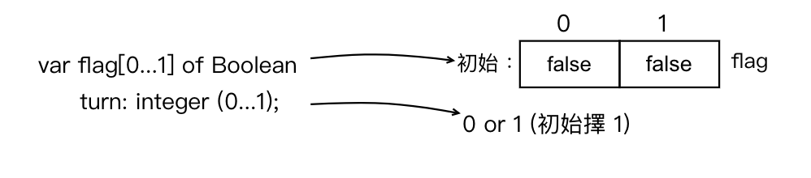</p>
</li>
<li>
<p>Pi 之程式片段：<br>
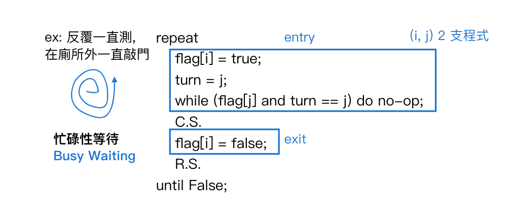</p>
</li>
<li>
<p>分析：</p>
<ol>
<li>滿足 mutual exclusion (互斥)<br>
說明：<br>
當 2 process 皆欲進入 C.S., 則 <code>flag[i] = flag[j] = true</code>, 但 turn 不會同時為 i, j (因為 i 不等於 j), 故只有一 process 可進入 C.S.</li>
<li>滿足 progress (可進行性)<br>
說明：
<ul>
<li>當 Pj 不想進入 C.S., 又 <code>turn = j</code>, 且此時 <code>flag[j] = false</code>, 故當 Pi 想進入, 可以順利通過 while loop</li>
<li>當 2 process 皆欲進入 C.S., 此時視 turn 的值為 i 或 j, 指向者可進入 C.S., 所以 No deadlock</li>
</ul>
</li>
<li>滿足 Bounded Waiting (有限性等待)<br>
說明：<br>
當 Pi, Pj 皆欲進入 C.S., 而 <code>turn = j</code>時, 則 Pj 可進入, 若 Pj 離開後立即再度欲進入 C.S., 則：<br>
<code>flag[j] = true;</code><br>
<code>turn = i</code><br>
因為 <code>turn = i</code>, 故下次必由 Pj 進入 C.S. 中</li>
</ol>
</li>
</ul>
<hr>
<h3>多 process 的 C.S. Design =&gt; Bakery's algorithm</h3>
<ul>
<li>
<p>資料結構：<br>
<figure class="highlight plain"><table><tr><td class="gutter"><pre><span class="line">1</span><br><span class="line">2</span><br></pre></td><td class="code"><pre><span class="line">var choosing: Array[0....n-1] of Boolean;</span><br><span class="line">    number: Array[0....n-1] of Integer; (initial 皆為 0)</span><br></pre></td></tr></table></figure></p>
</li>
<li>
<p>數字假設：</p>
<ol>
<li><code>(a, b) &lt; (c, d)</code>, if
<ol>
<li><code>a &lt; c</code> or</li>
<li><code>a = c</code> 且 <code>b &lt; d</code></li>
</ol>
</li>
<li><code>Max(X0...Xn-1)</code> =&gt; 取 X0 ~ Xn-1 中最大值</li>
</ol>
</li>
<li>
<p>Pi 之程式片段：
</p>
</li>
</ul>
<hr>
<h3>Semaphore (號誌) (可有互斥的效果)</h3>
<ul>
<li>Def: 為解決同步問題的一種機制, 本身為一整數型別 (通常初始為 1), <strong>會提供 2 個 atomically execution (不可分割, 指過程中不能被中斷) 的運作</strong>
<ul>
<li>signal</li>
<li>wait</li>
</ul>
</li>
<li>圖：<br>
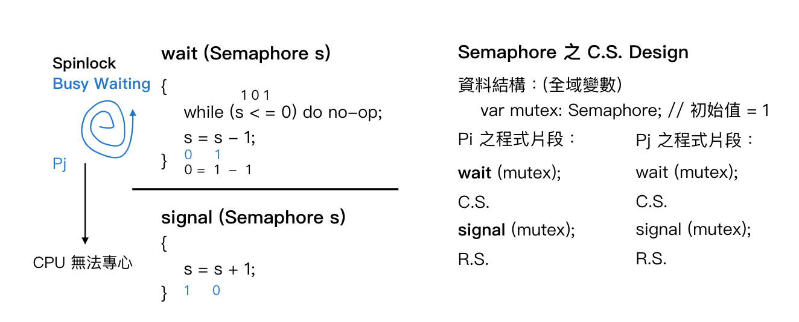</li>
<li>Note:<br>
Semaphore 初始值為 1 時, 則狀態永遠為 0 或 1, 故 Pj 謂之 <strong>Binary Semaphore (二元號誌)</strong></li>
</ul>
<h3>Counting Semaphore (計數號誌)</h3>
<p>Def: 有別於 Binary Semaphore, 於 counting semaphore 之中, 值可能為 1, 0, -1, -2....-n, <strong>若值為 -n, 代表有 n 個 process 卡在 wait 之中</strong><br>
=&gt; 製作方式：</p>
<ol>
<li>用 Block, wakeup 製作</li>
<li>用 Binary Semaphore 製作</li>
</ol>
<h4>&lt;法一&gt;：用 Block, wakeup 及 Queue 製作</h4>
<ul>
<li>作法：將 Semaphore 定義成一 Record (紀錄) (like class)<br>
<figure class="highlight plain"><table><tr><td class="gutter"><pre><span class="line">1</span><br><span class="line">2</span><br><span class="line">3</span><br><span class="line">4</span><br></pre></td><td class="code"><pre><span class="line">type countingSemaphore: record</span><br><span class="line">    value: integer; &#x2F;&#x2F;initial &#x3D; 1</span><br><span class="line">    L: Queue;</span><br><span class="line">end;</span><br></pre></td></tr></table></figure></li>
</ul>
<p>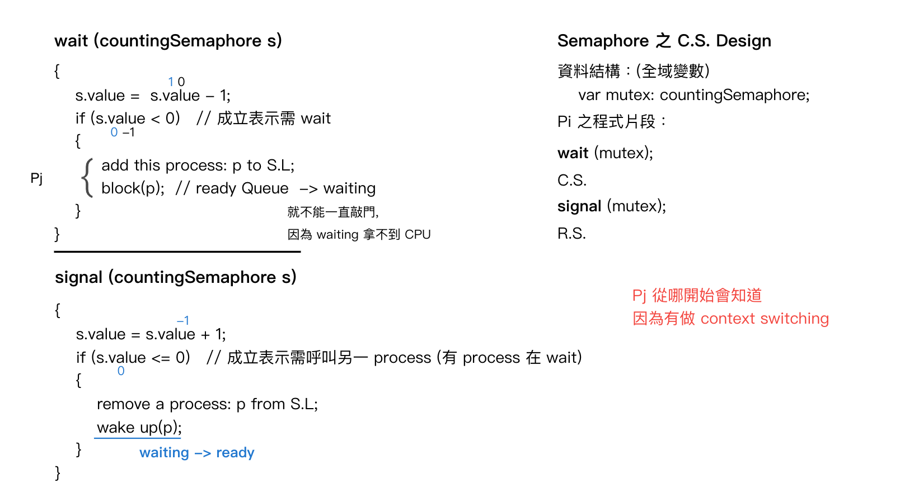</p>
<h4>&lt;法二&gt;：用 Binary Semaphore 製作出 counting semaphore</h4>
<ul>
<li>資料結構：<br>
<figure class="highlight plain"><table><tr><td class="gutter"><pre><span class="line">1</span><br><span class="line">2</span><br><span class="line">3</span><br></pre></td><td class="code"><pre><span class="line">var c: integer; initial &#x3D; 1 &#x2F;&#x2F; 計數器, like value, c 當 signal &amp; wait</span><br><span class="line">    S1: Binary Semaphore; initial &#x3D; 1 &#x2F;&#x2F; 對 C 做存取控制</span><br><span class="line">    S2: Binary Semaphore; initial &#x3D; 0 &#x2F;&#x2F; 用來模擬 block, wakeup 之效</span><br></pre></td></tr></table></figure></li>
</ul>
<p>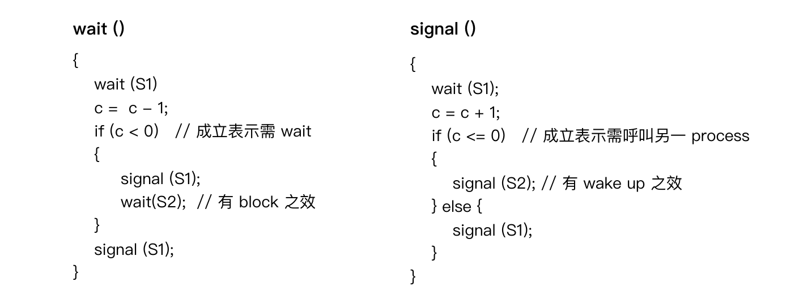</p>
<h4>Compare</h4>
<table>
<thead>
<tr>
<th style="text-align:left">Compare</th>
<th style="text-align:left">busy waiting (spinlock 盤旋鎖) 製作 counting semaphore (簡單的會使用)</th>
<th style="text-align:left">Block, wakeup 製作 (複雜的通常用)</th>
</tr>
</thead>
<tbody>
<tr>
<td style="text-align:left">優點</td>
<td style="text-align:left">wait 時不會有 context switching, 若為片刻等待, 適用</td>
<td style="text-align:left">wait 時不會用至 CPU</td>
</tr>
<tr>
<td style="text-align:left">缺點</td>
<td style="text-align:left">在 waiting 過程中, 會不斷的耗用 CPU 的資源, 所以浪費 CPU</td>
<td style="text-align:left">需 context switching</td>
</tr>
</tbody>
</table>
<hr>
<h3>思考</h3>
<p>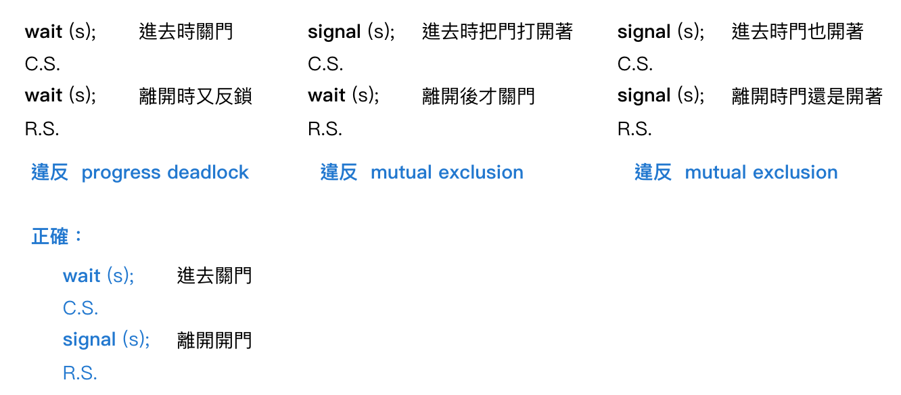</p>

  </div>
</article>


        
          <div id="footer-post-container">
  <div id="footer-post">

    <div id="nav-footer" style="display: none">
      <ul>
         
          <li><a href="/">Home</a></li>
         
          <li><a href="/about/">About</a></li>
         
          <li><a href="/archives/">Articles</a></li>
         
          <li><a href="/categories">Categories</a></li>
         
          <li><a href="/tags">Tags</a></li>
         
          <li><a href="/search/">Search</a></li>
        
      </ul>
    </div>

    <div id="toc-footer" style="display: none">
      <ol class="toc"><li class="toc-item toc-level-1"><a class="toc-link" href="#"><span class="toc-number">1.</span> <span class="toc-text">3.6 程序間的溝通 (Process Communication)</span></a><ol class="toc-child"><li class="toc-item toc-level-2"><a class="toc-link" href="#"><span class="toc-number">1.1.</span> <span class="toc-text">目錄</span></a></li><li class="toc-item toc-level-2"><a class="toc-link" href="#"><span class="toc-number">1.2.</span> <span class="toc-text">Shared Memory 分享記憶體</span></a><ol class="toc-child"><li class="toc-item toc-level-3"><a class="toc-link" href="#"><span class="toc-number">1.2.1.</span> <span class="toc-text">Critical Section Design</span></a></li><li class="toc-item toc-level-3"><a class="toc-link" href="#"><span class="toc-number">1.2.2.</span> <span class="toc-text">C.S. Design 目錄</span></a></li><li class="toc-item toc-level-3"><a class="toc-link" href="#"><span class="toc-number">1.2.3.</span> <span class="toc-text">2 個 process 的 C.S. Design</span></a><ol class="toc-child"><li class="toc-item toc-level-4"><a class="toc-link" href="#"><span class="toc-number">1.2.3.1.</span> <span class="toc-text">algorithm1:</span></a></li><li class="toc-item toc-level-4"><a class="toc-link" href="#"><span class="toc-number">1.2.3.2.</span> <span class="toc-text">algorithm2:</span></a></li><li class="toc-item toc-level-4"><a class="toc-link" href="#"><span class="toc-number">1.2.3.3.</span> <span class="toc-text">algorithm3:</span></a></li></ol></li><li class="toc-item toc-level-3"><a class="toc-link" href="#"><span class="toc-number">1.2.4.</span> <span class="toc-text">多 process 的 C.S. Design &#x3D;&gt; Bakery&#39;s algorithm</span></a></li><li class="toc-item toc-level-3"><a class="toc-link" href="#"><span class="toc-number">1.2.5.</span> <span class="toc-text">Semaphore (號誌) (可有互斥的效果)</span></a></li><li class="toc-item toc-level-3"><a class="toc-link" href="#"><span class="toc-number">1.2.6.</span> <span class="toc-text">Counting Semaphore (計數號誌)</span></a><ol class="toc-child"><li class="toc-item toc-level-4"><a class="toc-link" href="#"><span class="toc-number">1.2.6.1.</span> <span class="toc-text">&lt;法一&gt;：用 Block, wakeup 及 Queue 製作</span></a></li><li class="toc-item toc-level-4"><a class="toc-link" href="#"><span class="toc-number">1.2.6.2.</span> <span class="toc-text">&lt;法二&gt;：用 Binary Semaphore 製作出 counting semaphore</span></a></li><li class="toc-item toc-level-4"><a class="toc-link" href="#"><span class="toc-number">1.2.6.3.</span> <span class="toc-text">Compare</span></a></li></ol></li><li class="toc-item toc-level-3"><a class="toc-link" href="#"><span class="toc-number">1.2.7.</span> <span class="toc-text">思考</span></a></li></ol></li></ol></li></ol>
    </div>

    <div id="share-footer" style="display: none">
      <ul>
  <li><a class="icon" href="http://www.facebook.com/sharer.php?u=https://pingjing0628.github.io/2021/06/20/Chapter3-%E4%BD%9C%E6%A5%AD%E7%B3%BB%E7%B5%B1-%E7%A8%8B%E5%BA%8F%E9%96%93%E7%9A%84%E6%BA%9D%E9%80%9A-part1/" target="_blank" rel="noopener"><i class="fab fa-facebook fa-lg" aria-hidden="true"></i></a></li>
  <li><a class="icon" href="https://twitter.com/share?url=https://pingjing0628.github.io/2021/06/20/Chapter3-%E4%BD%9C%E6%A5%AD%E7%B3%BB%E7%B5%B1-%E7%A8%8B%E5%BA%8F%E9%96%93%E7%9A%84%E6%BA%9D%E9%80%9A-part1/&text=Chapter3-作業系統-程序間的溝通-part1" target="_blank" rel="noopener"><i class="fab fa-twitter fa-lg" aria-hidden="true"></i></a></li>
  <li><a class="icon" href="http://www.linkedin.com/shareArticle?url=https://pingjing0628.github.io/2021/06/20/Chapter3-%E4%BD%9C%E6%A5%AD%E7%B3%BB%E7%B5%B1-%E7%A8%8B%E5%BA%8F%E9%96%93%E7%9A%84%E6%BA%9D%E9%80%9A-part1/&title=Chapter3-作業系統-程序間的溝通-part1" target="_blank" rel="noopener"><i class="fab fa-linkedin fa-lg" aria-hidden="true"></i></a></li>
  <li><a class="icon" href="https://pinterest.com/pin/create/bookmarklet/?url=https://pingjing0628.github.io/2021/06/20/Chapter3-%E4%BD%9C%E6%A5%AD%E7%B3%BB%E7%B5%B1-%E7%A8%8B%E5%BA%8F%E9%96%93%E7%9A%84%E6%BA%9D%E9%80%9A-part1/&is_video=false&description=Chapter3-作業系統-程序間的溝通-part1" target="_blank" rel="noopener"><i class="fab fa-pinterest fa-lg" aria-hidden="true"></i></a></li>
  <li><a class="icon" href="mailto:?subject=Chapter3-作業系統-程序間的溝通-part1&body=Check out this article: https://pingjing0628.github.io/2021/06/20/Chapter3-%E4%BD%9C%E6%A5%AD%E7%B3%BB%E7%B5%B1-%E7%A8%8B%E5%BA%8F%E9%96%93%E7%9A%84%E6%BA%9D%E9%80%9A-part1/"><i class="fas fa-envelope fa-lg" aria-hidden="true"></i></a></li>
  <li><a class="icon" href="https://getpocket.com/save?url=https://pingjing0628.github.io/2021/06/20/Chapter3-%E4%BD%9C%E6%A5%AD%E7%B3%BB%E7%B5%B1-%E7%A8%8B%E5%BA%8F%E9%96%93%E7%9A%84%E6%BA%9D%E9%80%9A-part1/&title=Chapter3-作業系統-程序間的溝通-part1" target="_blank" rel="noopener"><i class="fab fa-get-pocket fa-lg" aria-hidden="true"></i></a></li>
  <li><a class="icon" href="http://reddit.com/submit?url=https://pingjing0628.github.io/2021/06/20/Chapter3-%E4%BD%9C%E6%A5%AD%E7%B3%BB%E7%B5%B1-%E7%A8%8B%E5%BA%8F%E9%96%93%E7%9A%84%E6%BA%9D%E9%80%9A-part1/&title=Chapter3-作業系統-程序間的溝通-part1" target="_blank" rel="noopener"><i class="fab fa-reddit fa-lg" aria-hidden="true"></i></a></li>
  <li><a class="icon" href="http://www.stumbleupon.com/submit?url=https://pingjing0628.github.io/2021/06/20/Chapter3-%E4%BD%9C%E6%A5%AD%E7%B3%BB%E7%B5%B1-%E7%A8%8B%E5%BA%8F%E9%96%93%E7%9A%84%E6%BA%9D%E9%80%9A-part1/&title=Chapter3-作業系統-程序間的溝通-part1" target="_blank" rel="noopener"><i class="fab fa-stumbleupon fa-lg" aria-hidden="true"></i></a></li>
  <li><a class="icon" href="http://digg.com/submit?url=https://pingjing0628.github.io/2021/06/20/Chapter3-%E4%BD%9C%E6%A5%AD%E7%B3%BB%E7%B5%B1-%E7%A8%8B%E5%BA%8F%E9%96%93%E7%9A%84%E6%BA%9D%E9%80%9A-part1/&title=Chapter3-作業系統-程序間的溝通-part1" target="_blank" rel="noopener"><i class="fab fa-digg fa-lg" aria-hidden="true"></i></a></li>
  <li><a class="icon" href="http://www.tumblr.com/share/link?url=https://pingjing0628.github.io/2021/06/20/Chapter3-%E4%BD%9C%E6%A5%AD%E7%B3%BB%E7%B5%B1-%E7%A8%8B%E5%BA%8F%E9%96%93%E7%9A%84%E6%BA%9D%E9%80%9A-part1/&name=Chapter3-作業系統-程序間的溝通-part1&description=" target="_blank" rel="noopener"><i class="fab fa-tumblr fa-lg" aria-hidden="true"></i></a></li>
  <li><a class="icon" href="https://news.ycombinator.com/submitlink?u=https://pingjing0628.github.io/2021/06/20/Chapter3-%E4%BD%9C%E6%A5%AD%E7%B3%BB%E7%B5%B1-%E7%A8%8B%E5%BA%8F%E9%96%93%E7%9A%84%E6%BA%9D%E9%80%9A-part1/&t=Chapter3-作業系統-程序間的溝通-part1" target="_blank" rel="noopener"><i class="fab fa-hacker-news fa-lg" aria-hidden="true"></i></a></li>
</ul>

    </div>

    <div id="actions-footer">
        <a id="menu" class="icon" href="#" onclick="$('#nav-footer').toggle();return false;"><i class="fas fa-bars fa-lg" aria-hidden="true"></i> Menu</a>
        <a id="toc" class="icon" href="#" onclick="$('#toc-footer').toggle();return false;"><i class="fas fa-list fa-lg" aria-hidden="true"></i> TOC</a>
        <a id="share" class="icon" href="#" onclick="$('#share-footer').toggle();return false;"><i class="fas fa-share-alt fa-lg" aria-hidden="true"></i> Share</a>
        <a id="top" style="display:none" class="icon" href="#" onclick="$('html, body').animate({ scrollTop: 0 }, 'fast');"><i class="fas fa-chevron-up fa-lg" aria-hidden="true"></i> Top</a>
    </div>

  </div>
</div>

        
        <footer id="footer">
  <div class="footer-left">
    Copyright &copy;
    
    
    2019-2022
    PinJing Wang
  </div>
  <div class="footer-right">
    <nav>
      <ul>
         
          <li><a href="/">Home</a></li>
         
          <li><a href="/about/">About</a></li>
         
          <li><a href="/archives/">Articles</a></li>
         
          <li><a href="/categories">Categories</a></li>
         
          <li><a href="/tags">Tags</a></li>
         
          <li><a href="/search/">Search</a></li>
        
      </ul>
    </nav>
  </div>
</footer>

    </div>
    <!-- styles -->


  <link rel="preload" as="style" href="https://cdnjs.cloudflare.com/ajax/libs/font-awesome/5.15.2/css/all.min.css" crossorigin="anonymous" onload="this.onload=null;this.rel='stylesheet'"/>


    <!-- jquery -->
 
  <script src="https://cdnjs.cloudflare.com/ajax/libs/jquery/3.6.0/jquery.min.js" crossorigin="anonymous"></script> 


<!-- clipboard -->

  
    <script src="https://cdnjs.cloudflare.com/ajax/libs/clipboard.js/2.0.7/clipboard.min.js" crossorigin="anonymous"></script> 
  
  <script type="text/javascript">
  $(function() {
    // copy-btn HTML
    var btn = "<span class=\"btn-copy tooltipped tooltipped-sw\" aria-label=\"Copy to clipboard!\">";
    btn += '<i class="far fa-clone"></i>';
    btn += '</span>'; 
    // mount it!
    $(".highlight table").before(btn);
    var clip = new ClipboardJS('.btn-copy', {
      text: function(trigger) {
        return Array.from(trigger.nextElementSibling.querySelectorAll('.code')).reduce((str,it)=>str+it.innerText+'\n','')
      }
    });
    clip.on('success', function(e) {
      e.trigger.setAttribute('aria-label', "Copied!");
      e.clearSelection();
    })
  })
  </script>


<script src="/js/main.js"></script>

<!-- search -->

<!-- Google Analytics -->

<!-- Baidu Analytics -->

<!-- Cloudflare Analytics -->

<!-- Umami Analytics -->

<!-- Disqus Comments -->


</body>
</html>
